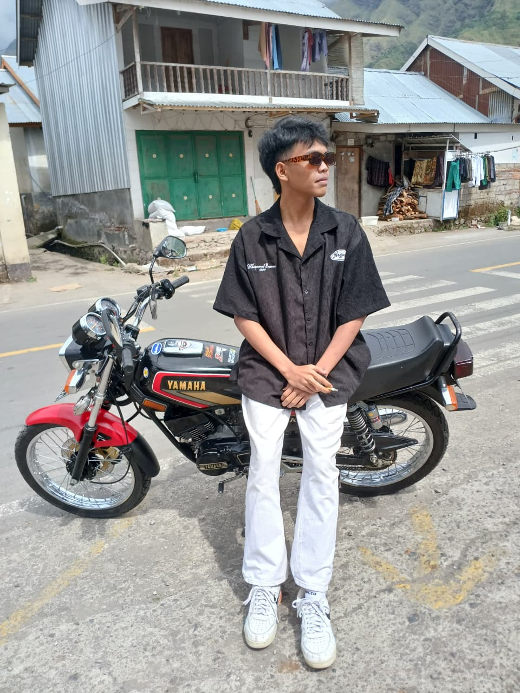
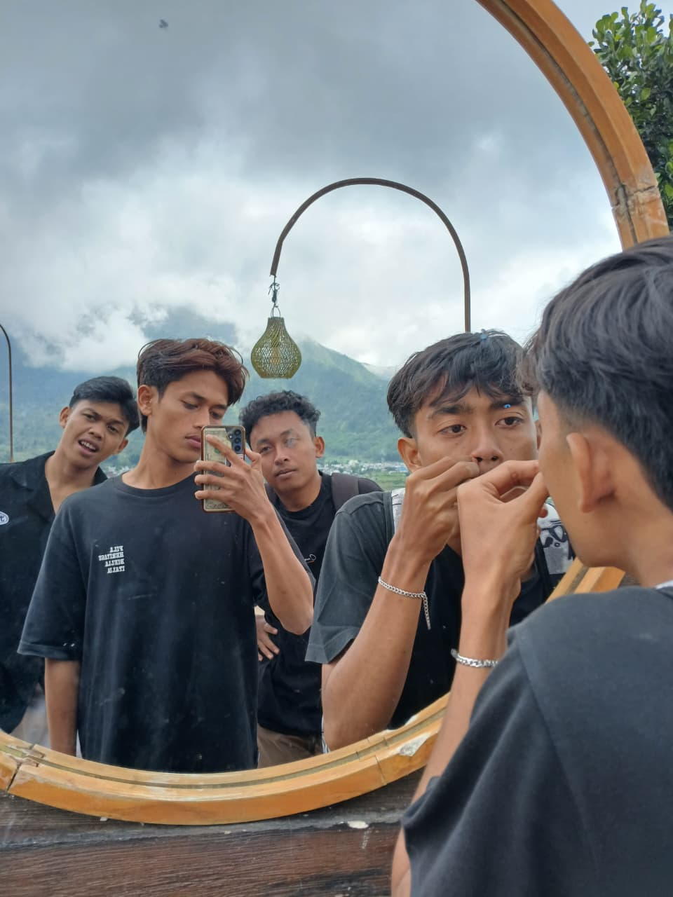
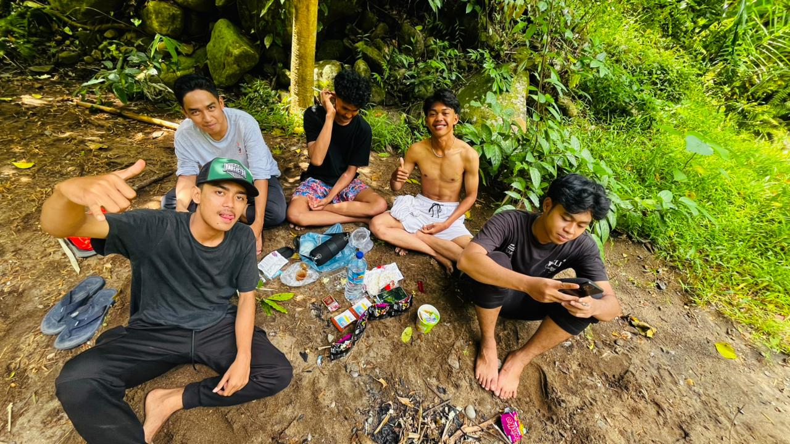
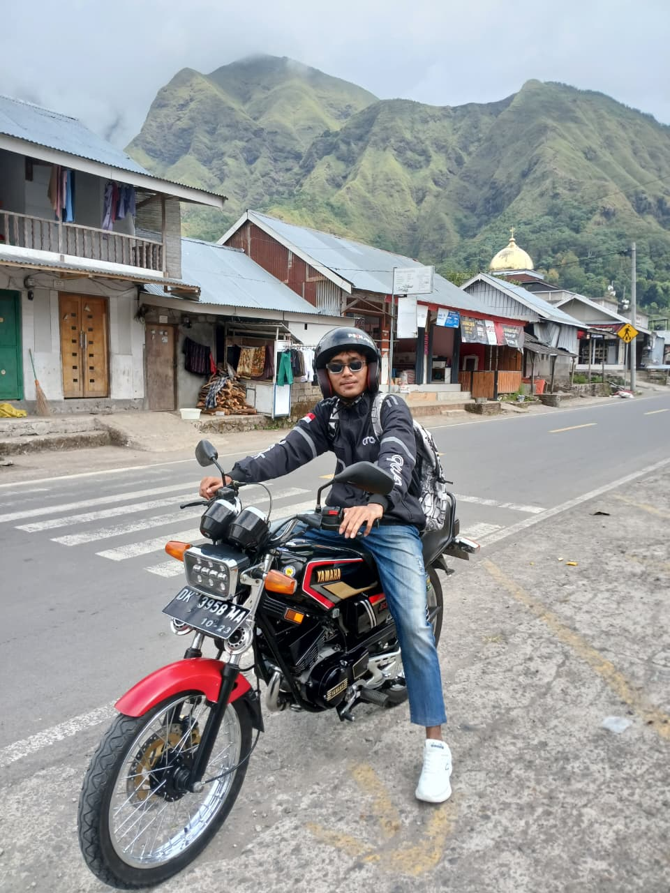
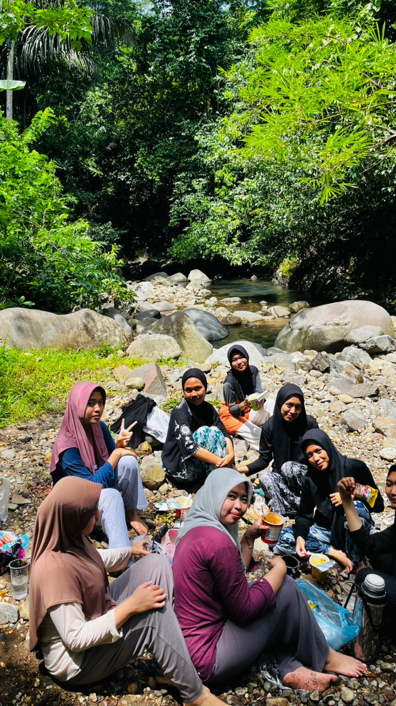
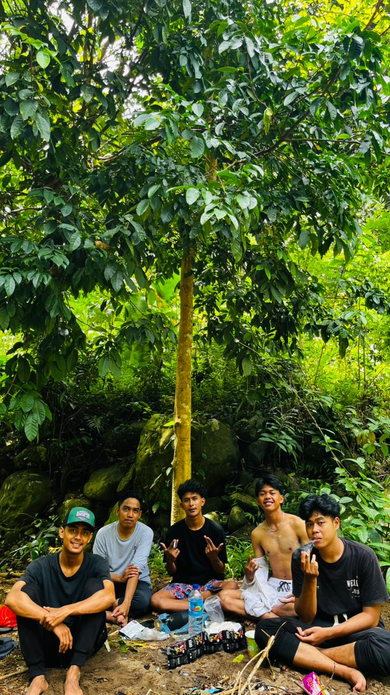
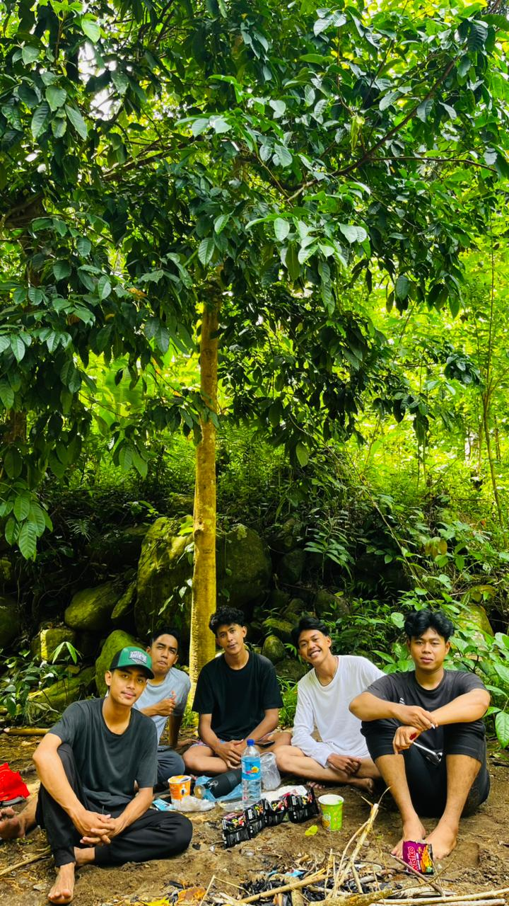
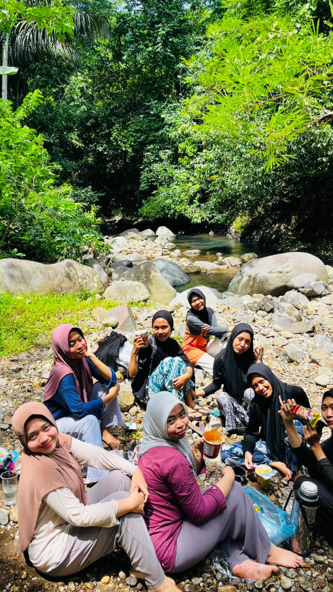
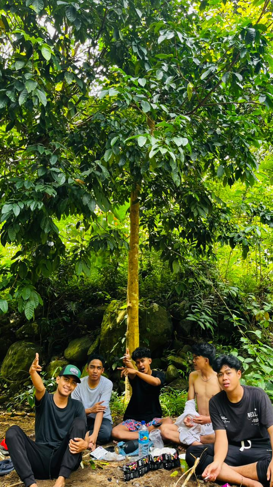

Hari Pertama / Perkenalan
Momen awal kenalan dan semangat tahun ajaran baru.
AwalKlik untuk lihat semua foto →
05
Satu halaman untuk menyimpan foto, cerita, dan tawa selama masa sekolah. Biru langit kenangan, emasnya persahabatan — selamanya di hati.
Kenangan yang ingin kita simpan bersama
Kami angkatan Graduate 05 di PONDOK MODERN AL-HIKMAH PEMENANG. Dari hari pertama masuk sekolah hingga hari perpisahan, banyak momen indah yang layak diabadikan di halaman ini.
Website ini dibuat sederhana agar semua teman bisa melihat kembali: study tour, pentas, lomba, kegiatan keagamaan, ujian, dan foto-foto random di kelas.
“Sekolah akan berakhir, tapi kenangannya tetap hidup.”
Klik salah satu kenangan untuk melihat semua foto
Momen awal kenalan dan semangat tahun ajaran baru.
AwalKlik untuk lihat semua foto →










Jalan jalan bareng teman seangkatan.
WisataKlik untuk lihat semua foto →
Buka Bersama angkatan 05 Pondok Modern Al-Hikmah.
BukberKlik untuk lihat semua foto →
Foto random, jajan, atau belajar bareng sebelum ujian.
KelasKlik untuk lihat semua foto →
perpisahan angkatan 05 pondok modern al-hikmah.
WisudaKlik untuk lihat semua foto →

Pelantikan pengurus kelas atau organisasi pondok modern al-hikmah.
OrganisasiKlik untuk lihat semua foto →
Perjalanan dari tahun 2021 - 2024
Kenalan angkatan, organisasi kelas, dan lingkungan baru.
Projek kelompok, ekstra, dan mulai banyak foto bareng.
Ujian, bimbingan, persiapan lulus, dan kenangan terakhir di sekolah.
Hari yang ditunggu — lulus bersama, dengan logo angkatan yang sama.
Hal-hal yang sering kita ingat
“Terima kasih sudah jadi bagian dari masa sekolah terbaikku.” — Teman seangkatan
“Jumpa lagi di reunian — angkatan 05 selalu di hati.” — Teman seangkatan
Ikuti Instagram resmi media sosial angkatan kami
Official Account
Follow Instagram kami untuk melihat update terbaru dan bernostalgia bersama.
@allaxe_generation05